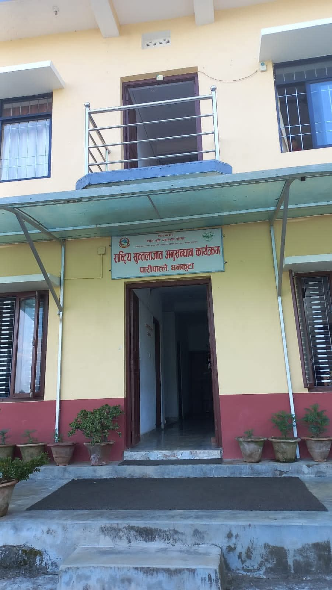
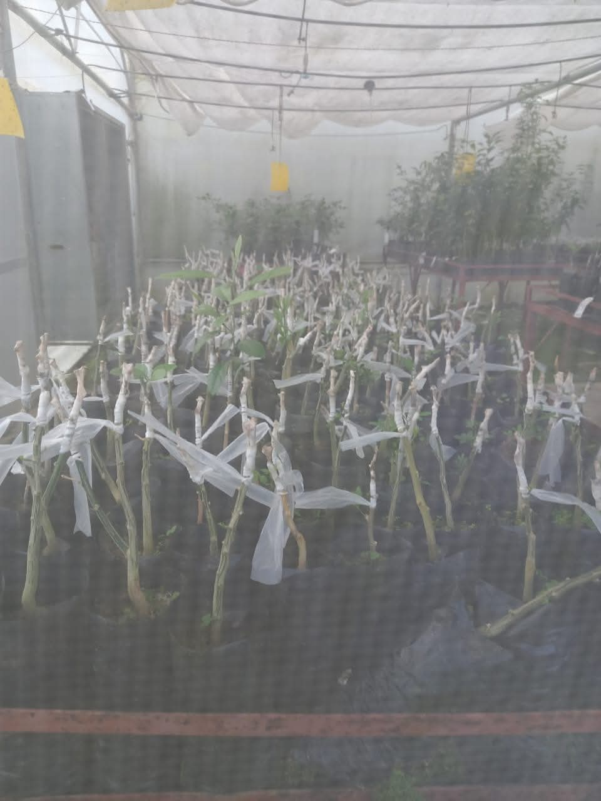
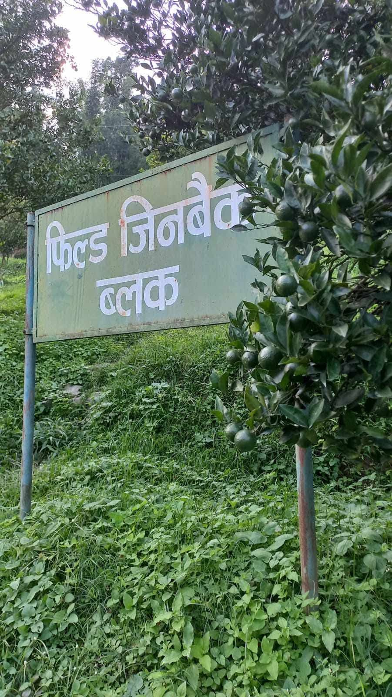
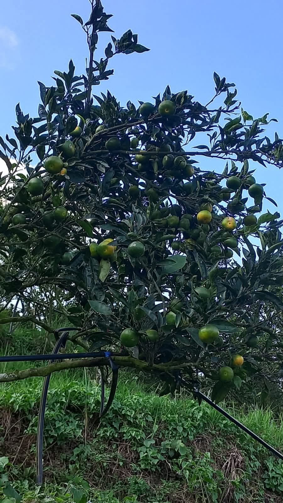
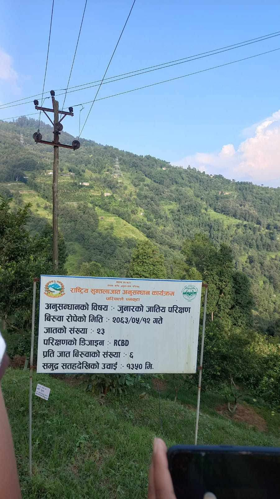
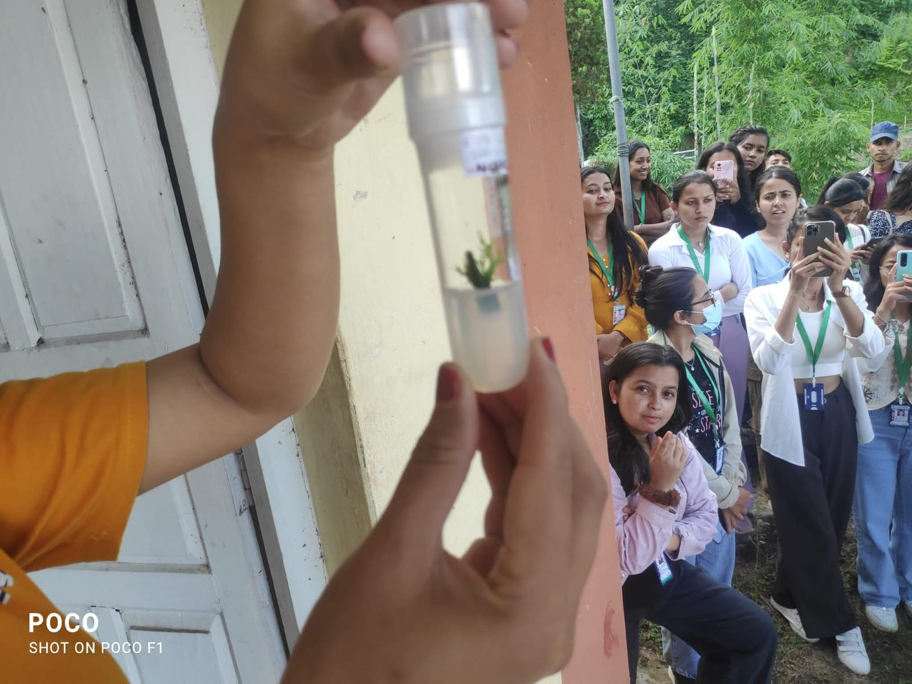
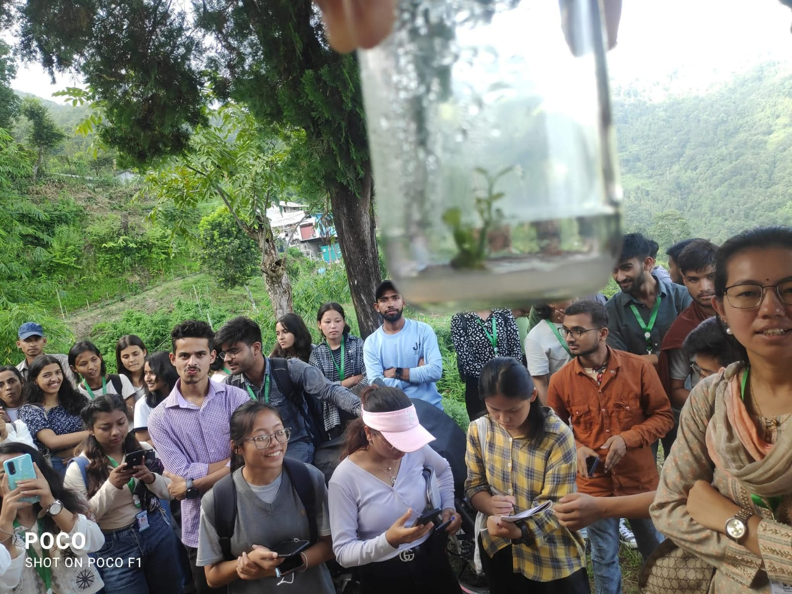
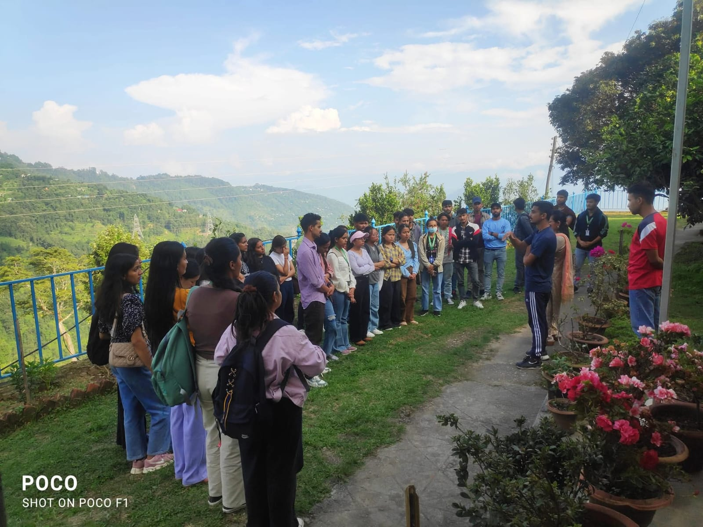

Introduction & Context
During my field visit to NCRP at Paripatle, Dhankuta, I gained detailed insight into citrus research in Nepal. Operated under NARC, NCRP has a national mandate for citrus crops, focusing on propagation, pest and pathogen management, IPM practices, and potential use of citrus essential oils as insect repellents.
The site lies at 900–1,390 m above sea level in the mid-hill region, ideal for citrus cultivation. Observations included tissue culture labs, rootstock-scion grafting (trifoliate orange with ‘Khoku local’ mandarin), pest/disease monitoring, and post-harvest research.
Citrus Propagation and Planting Material Quality
NCRP’s propagation work focuses on producing high-quality, disease-free saplings using tissue culture and grafting. Experiments to improve trifoliate rootstock germination and optimize grafting dates/methods for mandarins ensure uniformity, disease resistance, and orchard success. Clean planting material significantly reduces initial pathogen load, including Citrus tristeza virus (CTV) and greening pathogens.
Pest & Pathogen Management
Citrus pests and pathogens in Nepal include:
- Fruit flies (Tephritidae): Major post-harvest loss agents; NCRP monitors using traps and integrated control.
- Citrus psyllids: Vectors of citrus greening (Huanglongbing), reducing yield drastically.
- Stink bugs: Cause fruit deformation and quality loss; controlled through IPM and botanical repellents.
- Root-rot pathogens: Affect survival of young grafted saplings; managed via resistant rootstocks and soil amendments.
- Citrus tristeza virus (CTV): Causes decline and death of susceptible scions; mitigated via certified virus-free grafts.
Integrated Pest Management (IPM)
IPM at NCRP combines:
- Regular pest/disease scouting
- Use of resistant/tolerant rootstocks and scions
- Cultural controls: pruning, sanitation, orchard rejuvenation
- Biological agents (parasitoids, predators)
- Chemical treatments: low-cost and targeted applications
- Experimental use of essential-oil-based repellents (chili, garlic, citrus peel oils) for fruit flies, psyllids, and stink bugs
Surveys indicate that although ~74% of farmers are aware of IPM, only ~35% implement practices effectively. Participatory field trials integrating essential-oil-based repellents and bio-insecticides could significantly improve adoption.
Relevance to My Research Interest
Given my research focus on citrus protection, pest/pathogen management, IPM practices, and essential-oil repellents, NCRP offers multiple avenues:
- Pest/disease profiling: Fruit flies, psyllids, root-rot pathogens, stink bugs, greening, and CTV require systematic monitoring; NCRP provides baseline data and management strategies.
- Off-season production & varietal improvement: Gene-bank and varietal selection allow testing varieties high in essential oils for repellent extraction while extending harvest windows.
- IPM & farmer training gaps: Participatory trials can integrate essential oils, biologicals, cultural controls, and traps into farmer-managed IPM.
- Post-harvest & value addition: Extracted citrus oils can be used as biopesticides, repellents, or in value-added products, enhancing sustainability and farmer income.
- Orchard management and rejuvenation: Nutrient optimization, pruning, and disease management provide practical sites for applied research on IPM and oil-based repellents.
Field Observations & Reflections
Orchards include multiple blocks of mandarin, sweet orange, acid lime, hybrids, and rootstocks. Demonstrations show integration of pest monitoring, IPM, and rejuvenation practices. Interaction with farmers highlighted the need for effective technology transfer and adoption of bio-based management strategies.
Post-Harvest and Value Addition
Essential oils extracted from high-oil varieties could serve as repellents, adding market value and supporting sustainable agriculture. Citrus orchards also contribute to carbon sequestration and climate mitigation.
Gallery







